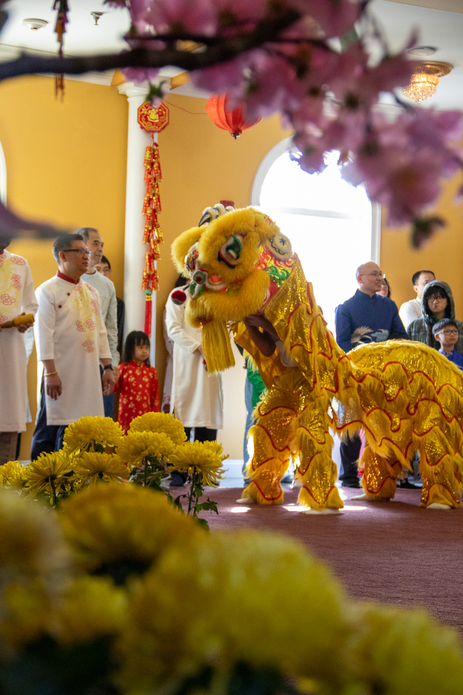
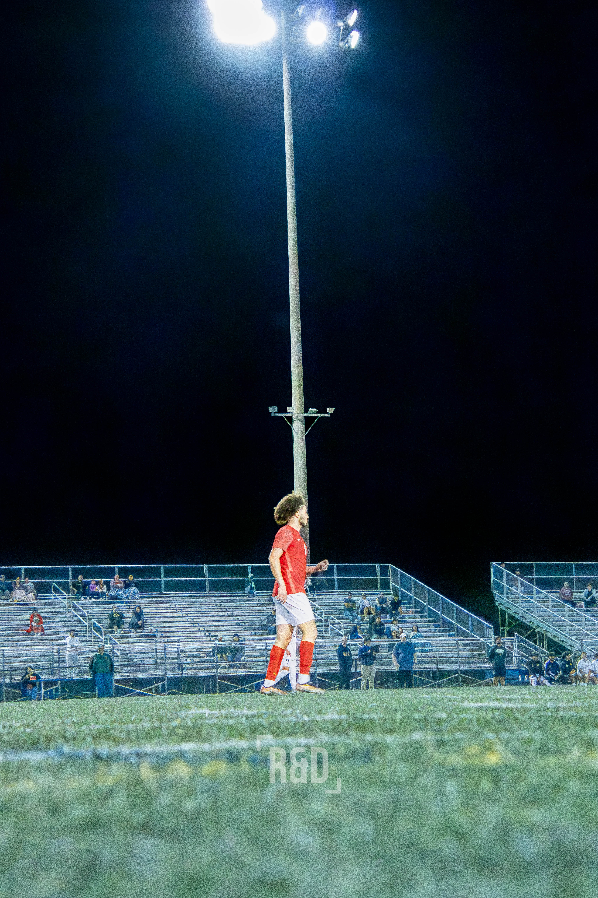
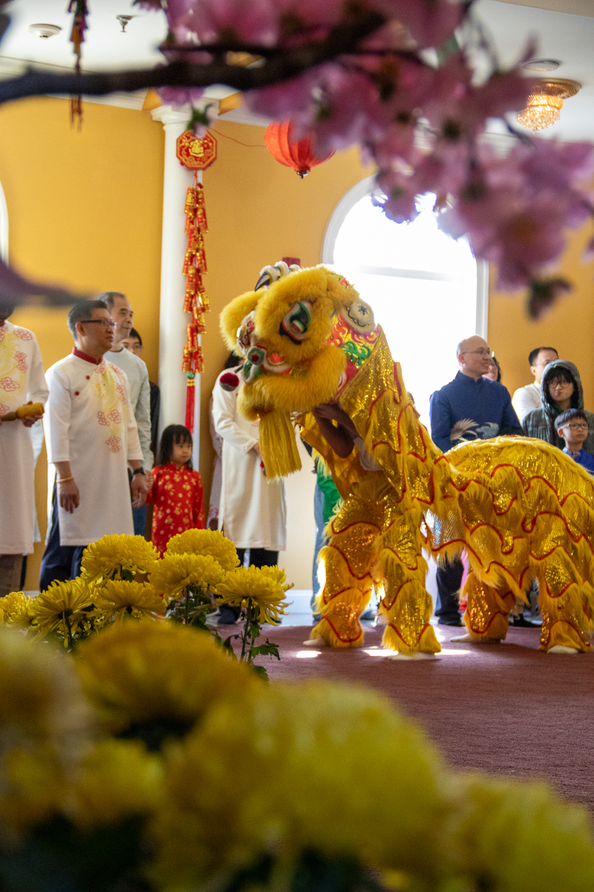
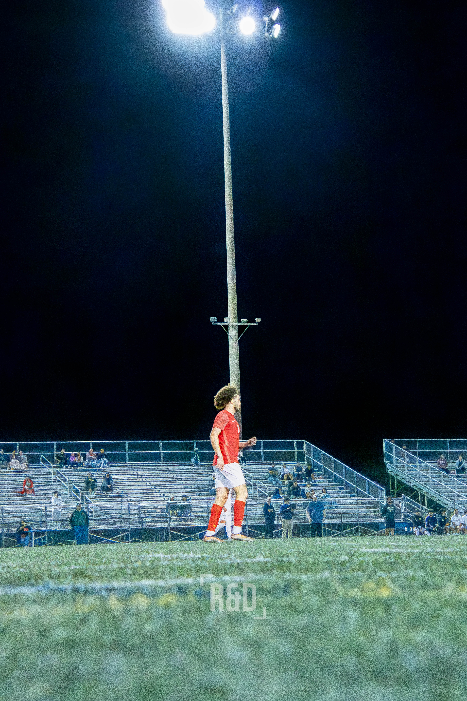

about me
Hi, I'm Randy!
I'm a hobbyist of all things and I love to travel.
I was born in Arlington, Virginia and currently live in Alexandria, Virginia
where I attend Thomas A. Edison High School. Growing up, I loved
learning about space and science which was an important part of
my upbringing. Space is and will always be one of my greatest passions/interests
and will (hopefully) be a large part of my career.
I can play 3 instruments. In order of when I learned them,
I can play the violin, piano, and guitar. Some of my current hobbies include
playing sports, lifting weights, and learning about computer engineering topics.
I hold currently hold title of #1 Iron Eagle at Edison which means, pound for pound,
I'm the strongest in the school. If you're curious, I squat 315, bench 165, and deadlift 340.
As for computer engineering topics, I am always learning more about AI and machine learning.
I'm learning everything I can, whether it be statistical analysis, cloud computing, or data science,
to prepare myself to be the best I can for when the special opportunity arises.
I'm also a photographer and videographer! I shoot street, nature, sports, and cultural events. Some of my photos can be found below.
 


